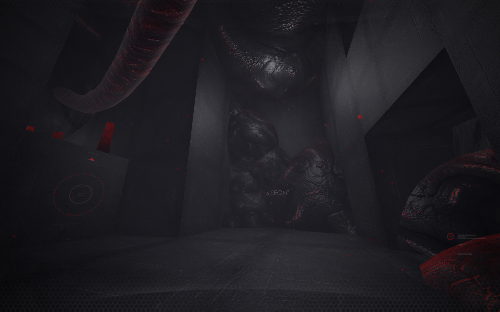
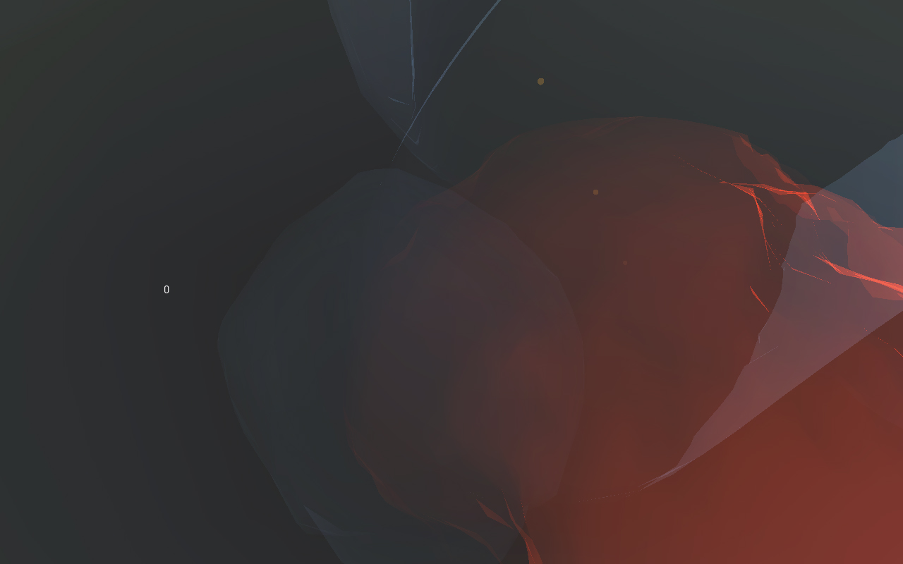
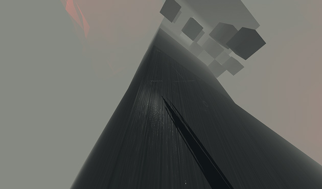
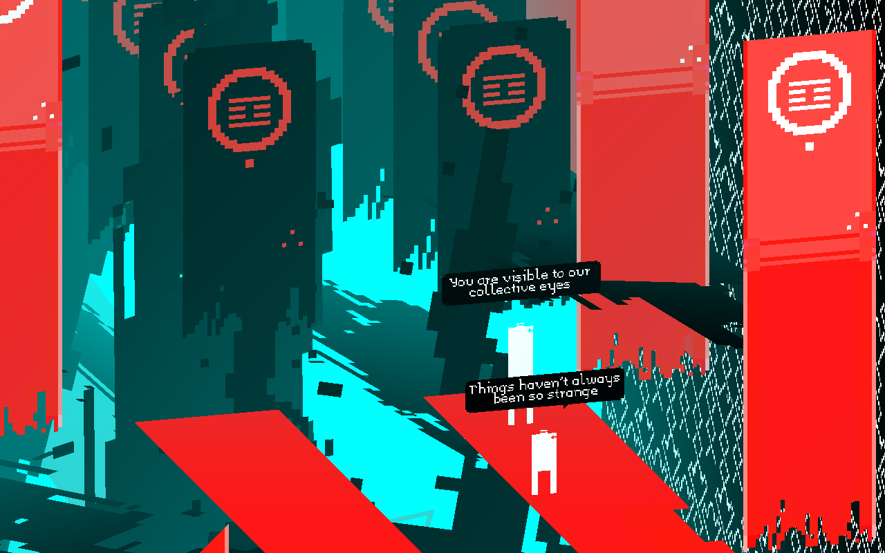
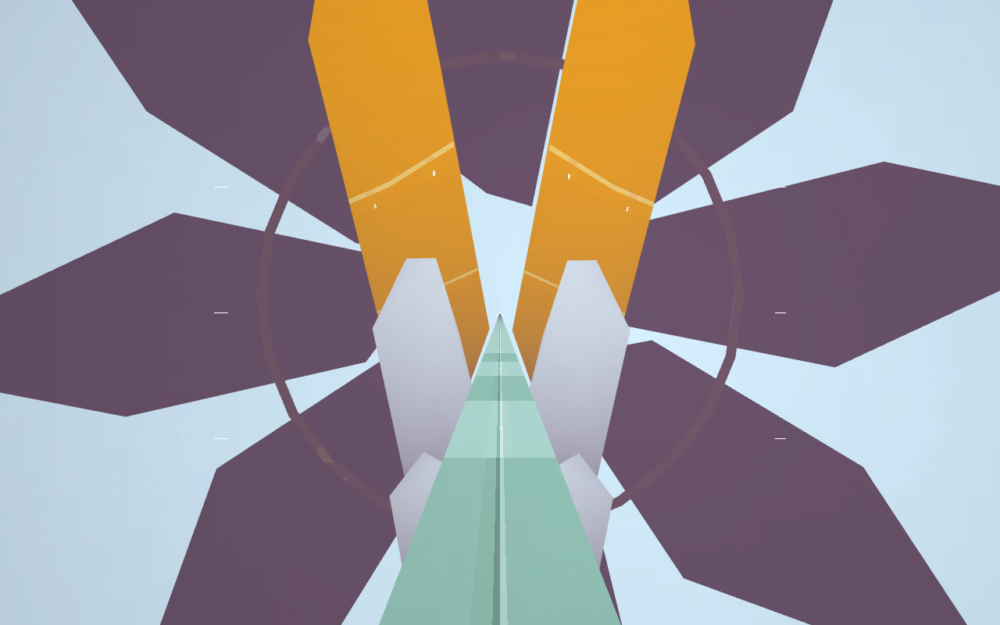
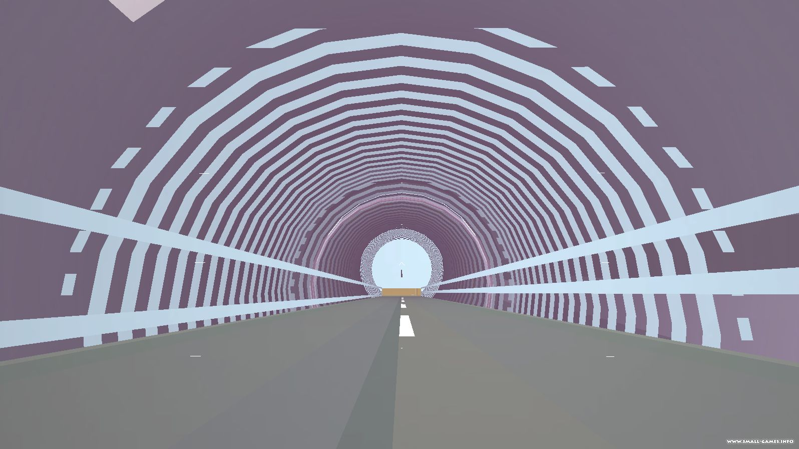
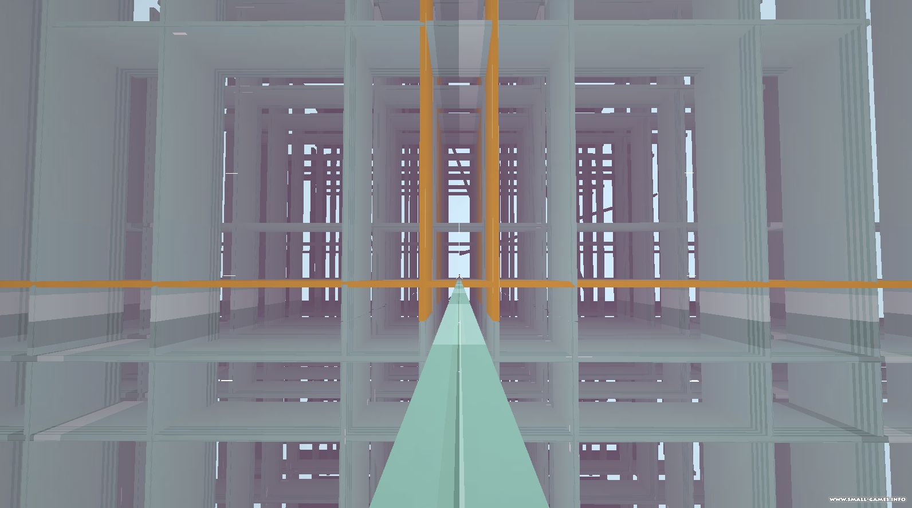
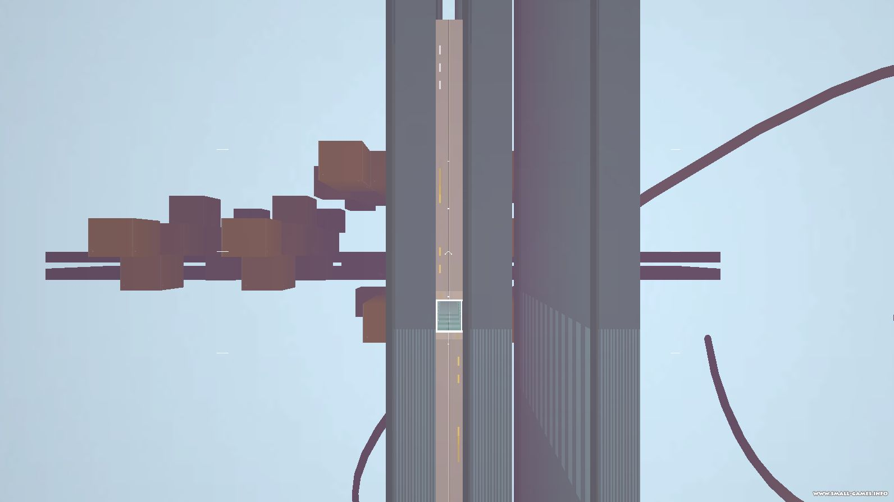
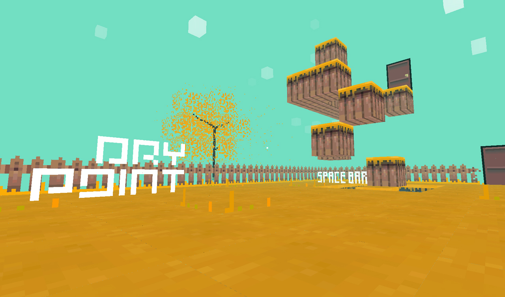
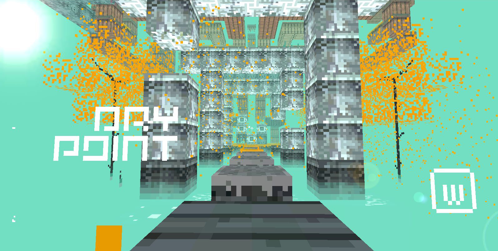

Sadly, a lot of the source for these games were lost in the sudden death of my working computer, and are only listed here for memory's sake. Some additional Unity games are available under collegiennes. A few videos of these games can be found here and there across youtube.

Bitrot: Unity games.
A lot of the abandonned projects were made using the Unity game engine, it was a convenient way to bundle cross-platform applications. The engine's APIs were in flux at the time, and the rapid migration from one version to the next became more trouble than it was worth. I also had difficulty versioning, and preserving copies, of these massive project files. The engine's transition toward a monthly fee had me looking elsewhere to host my projects.
As of January 2015, all Unity development was abandoned.









03S06— Drypoint - Doorway